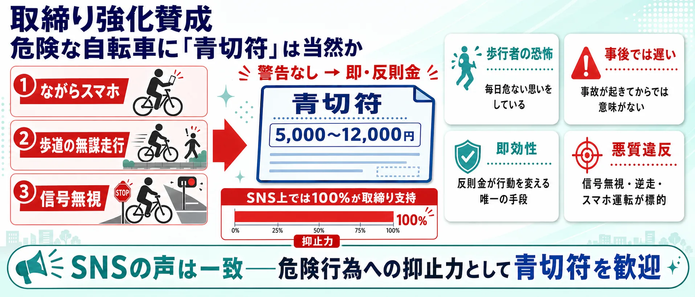
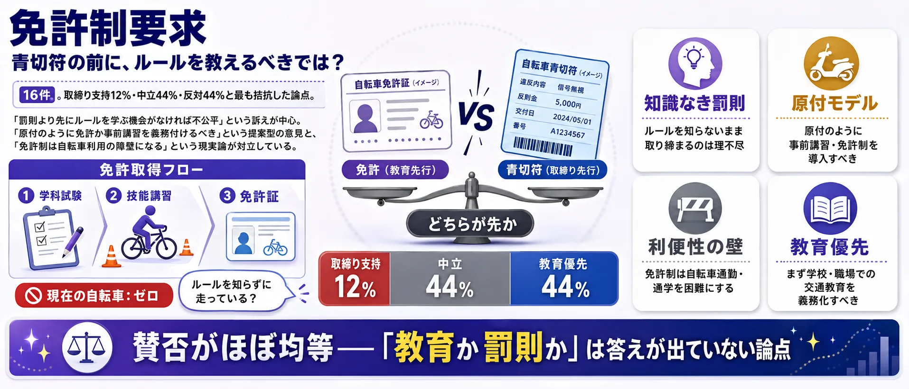

論点①
取締り強化賛成 — 「危険な自転車に青切符は当然か」90件
信号無視・ながらスマホ・歩道の無謀走行への抑止力として青切符を歓迎。SNS上ではこの論点だけ、全員が取締り強化を支持。
支持：歩行者の安全のため抑止力が必要
焦点：どの違反行為を対象にするか

危険運転を減らす青切符か、道路整備が追いつかないままの罰則強化か？
収集したSNS投稿468件のうち、分析対象の意見468件をAIで整理し、主要5論点255件に分類し、残る213件は「その他・分類保留」としました。世論調査ではなく、SNS反応サンプルの論点比較です。
自転車の交通違反に反則金（青切符）を導入すべきか（自転車の青切符導入）
Yahoo!リアルタイム検索で集めた公開投稿のサンプルです。社会全体の世論ではありません。
収集期間 2026-06-27〜2026-09-05／収集468件・意見468件（この図の母数）／更新 2026-09-05
このページは公開できません。独自性の検査に落ちています。
・「その他」に分類の確認候補が84件あります（本文再読の完了とは別に、意見判定や論点の採用確認が必要）
・「取締り強化賛成」に分類の確認候補が12件あります（本文再読の完了とは別に、意見判定や論点の採用確認が必要）
・「インフラ整備優先」に分類の確認候補が1件あります（本文再読の完了とは別に、意見判定や論点の採用確認が必要）
山を押すと、その論点の図解と、賛成・反対それぞれの投稿が読めます
山を押すと、その論点へ移ります（面積＝強く語られた投稿の数）
マス目100個が、いま見ている立場の全部です。 色つきのマスの数が、そのまま割合（％）になります。
件数
このページは、お使いの環境で図を描けなかったため、同じ内容を一覧で表示しています。円をえらぶと、その論点の内訳へ移動します。円の色はいちばん多い立場です。
213件（45.5%） 山の高さ：強い表現11.8%
立場の内訳は、この論点の全件で数えています
立場ごとに、その立場の中でこの論点が占める割合
この論点の中身（編集部が本文を読んで分けたもの）
90件（19.2%） 山の高さ：強い表現27.2%
立場の内訳は、この論点の全件で数えています
立場ごとに、その立場の中でこの論点が占める割合
この論点の中身（編集部が本文を読んで分けたもの）
一次資料と照らした結果
資料との照合
58件（12.4%） 山の高さ：強い表現26.1%
立場の内訳は、この論点の全件で数えています
立場ごとに、その立場の中でこの論点が占める割合
この論点の中身（編集部が本文を読んで分けたもの）
58件（12.4%） 山の高さ：強い表現22.4%
立場の内訳は、この論点の全件で数えています
立場ごとに、その立場の中でこの論点が占める割合
この論点の中身（編集部が本文を読んで分けたもの）
一次資料と照らした結果
資料との照合
29件（6.2%） 山の高さ：強い表現19.2%
立場の内訳は、この論点の全件で数えています
立場ごとに、その立場の中でこの論点が占める割合
この論点の中身（編集部が本文を読んで分けたもの）
一次資料と照らした結果
資料との照合
20件（4.3%） 山の高さ：強い表現27.4%
立場の内訳は、この論点の全件で数えています
立場ごとに、その立場の中でこの論点が占める割合
この論点の中身（編集部が本文を読んで分けたもの）
一次資料と照らした結果
資料との照合
このテーマは、まだ編集部が一次資料を読んで「語られていないこと」を確かめていません。確かめるまで、ここは空のままにします。
このテーマは、論点をまたいで言えることの整理がまだです。書けるまで、ここは空のままにします。
「自転車の青切符」の議論は「賛成か反対か」だけではありません。取り締まりの是非・インフラ整備の順番・車道走行の危険性・免許制の必要性・ルールの曖昧さ——5つの論点を整理してから投票に進んでください。
取締り強化賛成 — 「危険な自転車に青切符は当然か」90件
信号無視・ながらスマホ・歩道の無謀走行への抑止力として青切符を歓迎。SNS上ではこの論点だけ、全員が取締り強化を支持。

インフラ整備優先 — 「自転車レーンがないのに取り締まれるか」58件
うち27件（93%）が反対。専用レーンなしの罰則先行は理不尽という立場。「整備が先、取締りは後」という順番論が中心。

車道走行への不安 — 「「車道を走れ」というルールは安全か」20件
うち12件（86%）が不安を訴える。路駐・トラック・子ども・高齢者の問題。歩道を飛ばす自転車への歩行者の怒りとも交差する。

免許制要求 — 「罰則の前に、ルールを教えるべきでは？」29件
取締り支持12%・中立44%・反対44%と最も拮抗。「知らずに違反させる前に免許・講習を義務化すべき」という提案型の論点。

ルール曖昧・不信 — 「113種類の違反基準——誰が全部わかるか」58件
うち12件（67%）が反対・不信。「何が違反かわからない」「警察の恣意的運用が怖い」。基準の整理と周知なしでの取締りに強く反対。

使い方: 5つの論点を把握してから、次の投票で「自分が一番気になる論点」を選んでください。
2024年に道路交通法が改正され、自転車の違反に「青切符」（反則金）が導入されます。取り締まりを強化すべきか、まずインフラ整備が先か。あなたが最も気になる論点はどれですか？
1あなたが最も気になる論点をタップ （全2問）
※ サイト参加者の集計であり、世論調査ではありません。回答と、24時間の重複防止用に一方向変換した接続元情報をサーバーに保存します。
信号無視・ながらスマホ・歩道の無謀走行など、自転車の危険行為を止めるために取り締まりは当然という立場。「歩行者が怖い思いをしている」という視点から、青切符による制裁強化を支持します。
無法状態の自転車に怒り、青切符でも甘いとして厳格な対応を要求
@shocker108 の投稿をXで見る
自転車の一時不停止に怒り、厳格な取り締まりを強く求める
@bjayway の投稿をXで見る
「安全に走れる自転車専用レーンがないのに、車道を走れというのは無理だ」という立場。インフラ整備なしの罰則強化は自転車利用者への一方的な押しつけで、本末転倒という批判です。
インフラ整備不足を批判し、青切符制度に強く反対する声
@15jacnamagiga の投稿をXで見る
インフラ整備優先を主張しつつ青切符制度を条件付きで支持
@suzuking408 の投稿をXで見る
青切符と合わせて「自転車は原則車道」というルールが強調されることへの不安。「子どもを車道に出せるか」「路駐があって走れない」といった現実的な危険を訴える声があります。一方で、歩道を飛ばす自転車が危険だという歩行者目線も存在します。
青切符への疑念と子どもへの車道走行要求に強く反対
@isaiah8_1 の投稿をXで見る
路駐問題の解消と自転車の安全確保を要望する
@Mid_observatory の投稿をXで見る
「青切符だけでは甘い」「自転車にも免許制度か事前講習を義務付けるべきだ」という主張です。標識を理解していない自転車利用者が多いため、罰則より先に教育が必要という考え方です。
自転車への免許制や講習制度の導入を強く主張
@r70OylZbSZeiIIz の投稿をXで見る
自転車に免許制導入を提唱し安全優先の立場から現行ルールに疑問
@yamazakibusu の投稿をXで見る
「何が違反になるのか現場でわからない」「警察が恣意的に取り締まるのではないか」という不信感が中心。「113種類もの違反基準は覚えられない」「点数稼ぎ目的ではないか」という批判です。
青切符に強く反対、監視社会的な取り締まりへの怒り
@kress813 の投稿をXで見る
113種は多すぎ、簡略化と周知整備の後に実施すべきと主張
@Clifrennie の投稿をXで見る
2024年に成立した改正道路交通法により、自転車の交通違反にも「青切符」（交通反則通告制度）が導入されることになりました。16歳以上を対象に、信号無視や一時不停止、ながらスマホなどの違反に対して反則金が科されます。これまで自転車の違反は刑事罰の対象となる「赤切符」しかなく、実際にはほとんど検挙されてこなかったため、取り締まりの実効性を高める狙いがあります。
賛成する立場からは、歩道での危険走行や事故の増加を踏まえ「歩行者の安全を守るために必要」「ルールを守らない自転車が多すぎる」という声が上がっています。一方で反対・慎重な立場からは、「自転車レーンなどのインフラ整備が先ではないか」「車道走行を強いられると、かえって事故が増える」「違反の基準が曖昧で現場が混乱する」といった懸念が示されています。
また、そもそも自転車にはルールを学ぶ機会が免許制度のように用意されていないため、「取り締まりの前に講習や免許制が必要だ」という意見も一定数あり、単純な賛否では割り切れない構図になっています。
| 分類 | 自転車 取締り 強化 | 自転車 青切符 おかしい | 自転車 青切符 やりすぎ | 自転車 青切符 インフラ | 自転車 青切符 免許 | 自転車 青切符 反対 | 自転車 青切符 当然 | 自転車 青切符 賛成 | 自転車 青切符 車道 怖い | 自転車 青切符 道路 | 合計 |
|---|---|---|---|---|---|---|---|---|---|---|---|
| 取締り強化賛成・マナーや危険運転の改善を期待 | 10 | 0 | 1 | 0 | 1 | 0 | 10 | 5 | 0 | 7 | 34 |
| インフラ未整備への不満・専用レーンの設置が先決 | 0 | 1 | 0 | 17 | 1 | 1 | 0 | 0 | 0 | 11 | 31 |
| 車道走行への不安・原則車道は事故を増やすと反対 | 4 | 2 | 0 | 0 | 1 | 1 | 0 | 0 | 2 | 4 | 14 |
| 制度が不十分・青切符に留まらず自転車も免許制にすべき | 1 | 4 | 0 | 0 | 29 | 2 | 0 | 0 | 1 | 4 | 41 |
| ルールが曖昧・現場の混乱や取り締まりへの不審で反対 | 1 | 4 | 1 | 0 | 0 | 3 | 0 | 0 | 1 | 2 | 12 |
| その他・分類保留 | 14 | 8 | 1 | 0 | 0 | 8 | 0 | 2 | 2 | 10 | 45 |
| 分類 | 賛成（取締り強化） | インフラ優先 | 車道走行懸念 | 免許制要求 | 混乱懸念 | その他 | 合計 |
|---|---|---|---|---|---|---|---|
| 取締り強化賛成・マナーや危険運転の改善を期待 | 34 | 0 | 0 | 0 | 0 | 0 | 34 |
| インフラ未整備への不満・専用レーンの設置が先決 | 0 | 30 | 0 | 0 | 0 | 1 | 31 |
| 車道走行への不安・原則車道は事故を増やすと反対 | 0 | 0 | 13 | 0 | 0 | 1 | 14 |
| 制度が不十分・青切符に留まらず自転車も免許制にすべき | 0 | 0 | 0 | 41 | 0 | 0 | 41 |
| ルールが曖昧・現場の混乱や取り締まりへの不審で反対 | 0 | 0 | 0 | 0 | 12 | 0 | 12 |
| その他・分類保留 | 0 | 0 | 0 | 0 | 4 | 41 | 45 |
 憲法改正論議
憲法改正論議 部活動の地域移行
部活動の地域移行 高齢者免許返納
高齢者免許返納